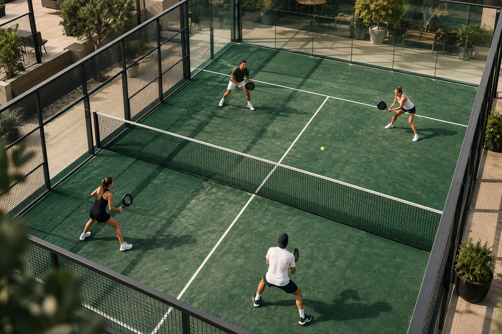
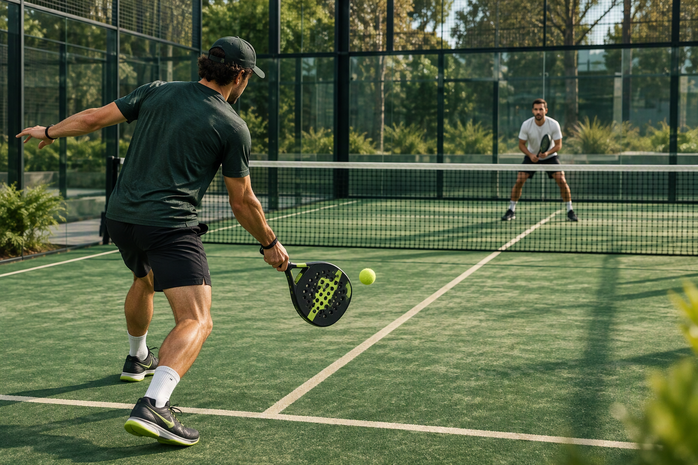

Üks põrge
Pall võib sinu väljakupoolel põrgata ainult ühe korra.
Ametlik mängujuhend
Kuidas servida, kasutada klaase, lugeda punkte ja võita matš. Üks selge juhend enne väljakule minekut.
Alusta reeglitest ↓
Kinnine väljak on jaotatud võrguga kaheks võrdseks pooleks.
Tavapärane formaat on paarismäng.
Pall tuleb tagasi mängida enne teist põrget.
Matš mängitakse enamasti parem kolmest setist.
01 / Serv
Servija alustab parempoolsest servialast ja vahetab pärast iga punkti poolt. Serv suunatakse diagonaalselt vastaspoole servikasti.

Mõlemad jalad peavad servimise hetkel jääma joone taha.
Enne lööki põrgata pall enda servialas vastu maad.
Serv on altlöök ja pall peab liikuma diagonaalsesse servikasti.
Esimese ebaõnnestumise järel on lubatud teine serv.
02 / Ralli ja seinad
Pärast põrandapõrget võib pall puudutada klaasi või metallvõrku. See eristab padelit tennisest ning muudab kaitsemängu oluliseks.
Pall võib sinu väljakupoolel põrgata ainult ühe korra.
Pärast põrandapõrget võib pall tulla klaasist tagasi ja jääda mängu.
Tagasilöök võib enne üle võrgu liikumist tabada sinu enda klaasi, kuid mitte metallvõrku.
Mängija ega reket ei tohi punkti ajal võrku puudutada.
03 / Punktiarvestus
Mängu võitmiseks tuleb tavaliselt võita vähemalt neli punkti ja saavutada kahepunktiline edu. Mõnel võistlusel kasutatakse seisul 40–40 otsustavat punkti.
Võitmiseks on vaja vähemalt kahe mängu edu.
Tavaliselt kasutatakse tie-break’i.
Levinud formaat on parem kolmest setist.
04 / Kiirjuhend
Vaata ja õpi
Vaata videot, et saada põhjalik ülevaade padeli põhireeglitest, punktiarvestusest ja mängu käigust.